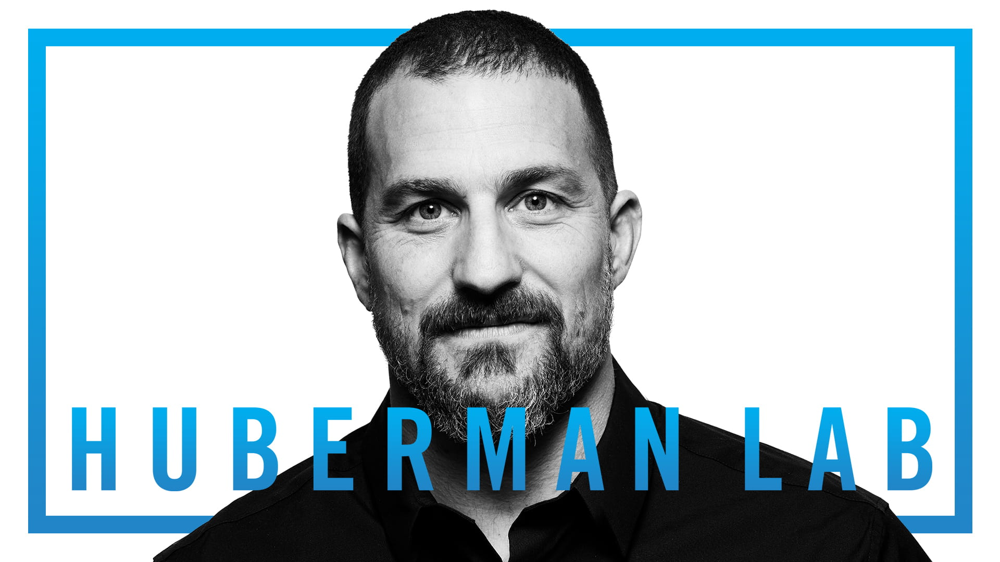
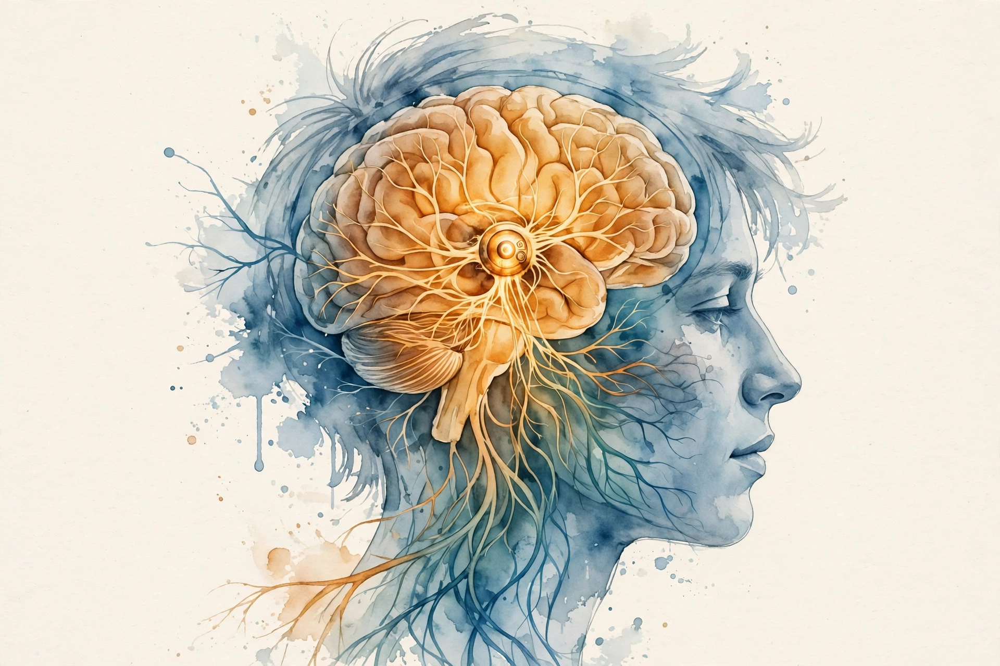
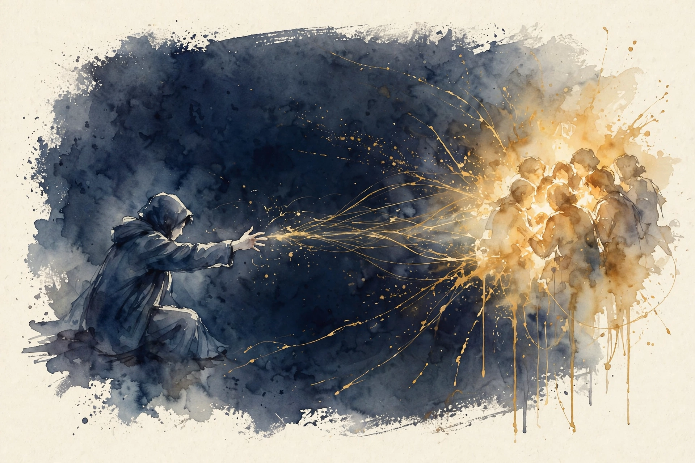
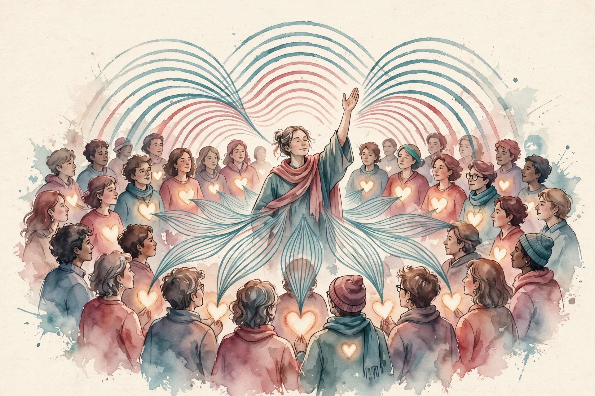

The Wisdom Index: every nugget in this companion
- Bonding is a process, not a trait
- Your brain runs a social thermostat
- Loneliness reports a gap, not a flaw
- Dopamine is pursuit, not pleasure
- People are like food to the brain
- The quiet craving system is not compatibility
- Shared stories synchronize bodies
- Attachment lives in the body first
- Feel with, and model of
- Oxytocin scales with closeness, and stops at the tribe
Source fact A claim from the episode transcript or the show's published chapter list. Interpretation My read on what it means. Chapter times come from the episode's own YouTube chapter list.
00:00
Bonding Is a Verb

Photo. Andrew Huberman. Source: hubermanlab.com.
Source fact The central claim: bonding is a verb, a process, not a trait. The same generic neural circuit gets repurposed for every bond you form, and it stays plastic across your life. Episodes 1 through 4 taught skills. This episode explains why the skills work: the brain treats social connection like food, water, and temperature.
Source fact Isolation is not neutral. It raises cortisol and adrenaline, and a molecule called tachykinin drives the irritability of the lonely. Understanding the circuit turns vague loneliness into a set of levers you can pull.
Nugget 1 · Bonding
Bonding is a process, not a trait
What happened. The same generic circuit builds every bond you ever form, and it stays plastic for life.
Why it matters. If bonding were a trait, you would be stuck with what you have. A process can be run on purpose.
The principle. Stop asking if you are a social person. Start asking whether you ran the bonding process today.
00:13:32
Social Homeostasis: The Thermostat Underneath the Thermostat

Illustration. The brain reads its social state and corrects it, like a thermostat. AI-generated watercolor.
Source fact Episode 1 gave you the warmth-competence thermostat for impressions. This episode gives you the deeper one. Kay Tye's social homeostasis model, presented in the episode, has four parts.
The social homeostasis circuit
Hover each node for its role.
Source: Huberman Lab, The Science of Social Bonding, 00:13:32. Kay Tye's model as presented on air.
Source fact Definition: homeostasis is the body's regulation of a variable around a set point. Social homeostasis regulates your level of connection the way temperature regulation handles heat.
Nugget 2 · Homeostasis
Your brain runs a social thermostat
What happened. Detector reads the state, control center decides the correction, effector drives you toward or away, and the PFC narrates the story.
Why it matters. You are not at the mercy of moods. Each part of the circuit is a lever.
The principle. When the urge hits, name the lever: detection, control, effect, or story.
00:27:00
Loneliness Is a Signal, Not a Character Flaw
Loneliness is not just being isolated
Andrew Huberman, citing John Cacioppo, 00:33:54
Source fact John Cacioppo's definition, cited in the episode: loneliness is the gap between the connection you want and the connection you have. It is a signal like hunger. Two people with identical social lives can feel different loneliness because their set points differ.
Toy: the loneliness gap calculator
Rate wanted and actual connection, 1 to 10. The toy computes your gap.
Nugget 3 · Loneliness
Loneliness reports a gap, not a flaw
What happened. Cacioppo defines loneliness as wanted minus actual connection. The same signal fires in crowded rooms and empty ones.
Why it matters. A signal asks for action. A character flaw asks for shame. Only one of them moves you.
The principle. Read the gap. Then close it with contact, not self-judgment.
00:33:54
Isolation Chemistry: Acute Craving, Chronic Irritability
Source fact Isolation chemistry runs in phases. Acute isolation triggers pro-social craving: you want people more. Chronic isolation flips to antisocial: you want people less and irritability rises. The tachykinin finding names one driver: prolonged isolation raises tachykinin signaling, which produces the cranky, prickly state of the long-lonely.
Source fact The Matthews and Tye paper on the dorsal raphe nucleus, cited in the episode: activating those dopamine neurons produced loneliness-like behavior, inhibiting them suppressed it, and the effect depended on social rank. The loneliness neurons are real, localizable, and rank-sensitive.
Source fact Dopamine needs a correction here. Dopamine is not the feel-good molecule. It is the movement-toward molecule. It drives craving and pursuit. That is why acute isolation raises social craving through dopamine, and why the same system can drive you away when the state flips.
Source fact Introverts get a reframe: they release more dopamine from less interaction. The introvert is not broken at parties. Their circuit saturates faster. Smaller doses, same chemistry.
The isolation timeline
Hover each phase for its chemistry.
Source: Huberman Lab, The Science of Social Bonding, 00:33:54. Phases as presented on air.
Nugget 4 · Chemistry
Dopamine is pursuit, not pleasure
What happened. Acute isolation raises dopamine-driven social craving. Chronic isolation raises tachykinin and stress hormones, flipping you antisocial.
Why it matters. Craving without liking explains why you can miss people and avoid them at the same time.
The principle. Know your phase. In the chronic phase, start with low-demand contact: a walk, not a party.
00:38:05
Your Brain Treats People Like Food

Illustration. Social craving runs on the same machinery as hunger. AI-generated watercolor.
Source fact The Saxe and Tye Nature Neuroscience study, cited in the episode: after 10 hours of isolation, images of social scenes activated the brain's craving regions the way food images do after fasting. The reverse also held: fasting made social images more rewarding. Social contact and food run on overlapping craving machinery.
Source fact Comfort eating follows the same logic. The prefrontal cortex works as accelerator and brake on all of this. Huberman's cold shower example: voluntary stress trains the PFC to stay online during discomfort, which keeps the social approach system from shutting down under stress.
Toy: which phase are you in
Enter how many days since meaningful social contact. The toy names your phase and the next move.
Nugget 5 · Craving
People are like food to the brain
What happened. Ten hours of isolation made social images fire craving regions like food does after a fast.
Why it matters. Social hunger is as physical as stomach hunger. Ignoring it does not make it philosophical. It makes it louder.
The principle. Feed the craving with contact before it flips into irritability.
00:42:45
Falling in Love: The Satiety Window
Source fact New love follows the craving logic too: the episode notes a satiety window of about 6 days to 6 months in new romance, during which the craving system is fed and quiets. Then the set point reasserts itself and the work of bonding resumes.
Nugget 6 · Romance
The quiet craving system is not compatibility
What happened. New love feeds the craving system for roughly 6 days to 6 months. Then the set point returns.
Why it matters. Couples who mistake the window for permanent compatibility skip building the bonding practices that carry the relationship after.
The principle. Use the window to build practices: shared rhythm, shared narrative, real vulnerability.
00:45:05
Hearts Beat Together

Illustration. Shared narrative aligns bodies, not just minds. AI-generated watercolor.
Source fact The Cell Reports study, cited in the episode: people's heartbeats synchronized when they heard the same story, even at different times. Shared narrative aligns bodies, not just minds. The concert phenomenon is the live version: thousands of strangers breathe and move together because the music gives them one shared timeline.
Source fact The holiday tool applies the finding. A shared narrative is a bridge. At a tense family gathering, the story everyone tells together does more bonding work than any topic of conversation.
Source fact Huberman's own practice: dancing dates with his sister. The activity is almost irrelevant. The shared rhythm is the mechanism.
Nugget 7 · Rhythm
Shared stories synchronize bodies
What happened. Heartbeats aligned to the same story across listeners, even at different times.
Why it matters. Bonding tools are not topics. They are shared timelines: stories, music, movement in sync.
The principle. At the next tense gathering, tell a shared story instead of raising a topic.
00:53:54
Attachment: Body Before Story
Source fact Allan Schore's attachment model, cited in the episode: the right brain handles autonomic, bodily attachment, while the left brain handles narrative and prediction. The episode warns that pop left-brain right-brain myths are wrong. The real division is body versus story, not logic versus creativity.
Nugget 8 · Attachment
Attachment lives in the body first
What happened. The right brain runs autonomic, bodily attachment. The left brain runs the narrative about it.
Why it matters. You cannot think your way into secure attachment. The body has to feel it first.
The principle. Regulate the body: breath, rhythm, presence. Then let the story update.
01:06:10
Two Kinds of Empathy
Source fact Empathy splits the same way. Emotional empathy feels with the other person. Cognitive empathy models what they think. The trust-game imaging studies, cited in the episode, show both systems must run together. Feel without modeling and you drown. Model without feeling and you manipulate.
Source fact Breakups hurt through both channels at once. You lose the empathy practice partner and you lose a major oxytocin and dopamine source. The craving system screams for the missing supplier.
Nugget 9 · Empathy
Feel with, and model of
What happened. Emotional empathy feels with. Cognitive empathy models thinking. Trust needs both.
Why it matters. Half the empathy toolkit explains both codependence and manipulation.
The principle. Run both channels. Check: am I feeling this, and do I understand the thinking behind it.
01:10:40
Oxytocin: The Bonding Molecule and Its Limits
the amount of oxytocin scales with how closely related one is
Andrew Huberman on Huberman Lab, 01:10:40
Source fact Oxytocin's resume, from the episode: social recognition, pair bonding, milk let-down, labor contractions, a pulse after male orgasm with about a 30-minute refractory delay, and modulation by vasopressin. It scales with closeness. The honesty spray studies, cited in the episode, found oxytocin increased truth-telling in lab games.
Source fact MDMA releases massive oxytocin, which is why couples trials explored it for therapy. The episode treats it as a research finding, not a recommendation.
Oxytocin's roles
Hover each role for the episode's example.
Source: Huberman Lab, The Science of Social Bonding, 01:10:40. Roles and limit as presented on air.
Source fact Limits matter. Oxytocin bonds you to your in-group. It does not automatically extend the circle. Bonding chemistry can deepen tribal lines as easily as it bridges them.
Nugget 10 · Oxytocin
Oxytocin scales with closeness, and stops at the tribe
What happened. Oxytocin runs recognition, bonding, birth, honesty, and more. But it bonds the in-group.
Why it matters. A trust potion for strangers does not exist. The same molecule can intensify us-versus-them.
The principle. Use it to deepen chosen bonds. Watch the in-group boundary.
The episode in seven lines
- Bonding is a verb. The circuit stays plastic for life.
- The social thermostat has four parts: detector, control, effector, story.
- Loneliness is the gap between wanted and actual connection.
- Dopamine is pursuit, not pleasure. Acute craving flips to chronic irritability.
- Your brain treats people like food. Ten hours of isolation fires craving regions.
- Shared stories synchronize heartbeats. Use shared narrative as a bridge.
- Oxytocin scales with closeness and stops at the tribe.
Distilled from Huberman Lab #51, The Science of Social Bonding, Dec 2021. Full episode: youtube.com/watch?v=RgAcOqVRfYA. Chapter times from the episode's own chapter list.